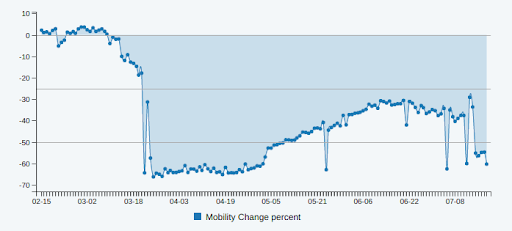

AdMAVIN - Covid Impressions Methodology
Problem Statement-
During lockdown, Out of Home advertisement suffered the most as movement of people (User Mobility) became nil. Even after the lockdown, people preferred to stay at home and user mobility couldn’t move to pre pandemic level for quite a long period of time.
Brands using OOH Advertisement wanted to understand the impact of Covid on daily mobility and thus average mobile impressions. Madison, a renowned media agency reached out to its tech partner- AdMAVIN with this problem statement. AdMAVIN team had to develop an algorithm and tool to measure the change in impression numbers or mobility due to Covid.
Google Mobility Report- Reference to Solve this Problem
AdMAVIN developed an algorithm based on Google Mobility Report which presents mobility trends in several categories. Such trends are analyzed on a monthly basis as shown in the image.
Here Google suggests changes in footfall of several points of interests for example, public transport, workplace and residential places among many others. It doesn’t directly solve the problem of the OOH industry. Industry wanted to know more about change in mobility which pertains to routes taken by users as most of the billboards, unipoles, bus shelters etc. are placed along the routes. But Google Mobility report helped AdMAVIN to formulate methodology for impact of covid on OOH impression numbers.
How AdMAVIN formulated the methodology using Google Mobility Report
Mobility information of the user is directly related to POI data. If someone travels from a residential society to a nearby school to drop off his/her ward, we can very well understand the route that he/she must have taken for the trip. Thus POI data can also give us route data. Any change in footfall of POI can very much be related to footfall of the audience on roads and thus also tells us about change in impression numbers for OOH Advertisements.
The Challenges
A perimeter of radius 1000 meters around the road’s coordinates is used to understand the locality by analyzing the Points of Interest (POI) present in it.
The current MAVIN classification of POIs is as follows:
- Sustenance
- Education
- Transportation
- Entertainment
- Residential
- Commercial
- Industrial
These MAVIN POI Classification is mapped with Google's place categories (from the Mobility Report), to map the classification wise change percentage.
As a given location contains various kinds of POIs, we estimate the change_pecentage calculating the weighted average of the change percentage of these respective categories. An example calculation is provided in the example section.
Key Notes / Observations:
- The change percentages of Google Report are not Traffic Change percentages. They are the avg. change in people observed in a given Point of Interest.
- Even though the residential areas have a +ve change in mobility, the overall traffic change can still be -ve in residential areas due the drop in the other Points of Interest (Shops, restaurants, etc.) in that locality.
- As the Google report provides the day-wise change_percentages since Feb 15th 2020, the OTS can also be measured day wise since Feb 15th till date.
Image below shows the day-wise change_percentage of OTS
 - Google mobility reports are released with a delay of 4 days to one week. Hence the OTS can be measured for any day up until a week before from today.
Example OTS Calculation for COVID19 times:
Location: Wadern Road St.Stephen Church, South Mumbai
Lat, Long: 18.964521, 72.804455
Media is assumed to be - "LIT"
For this Locality, the change percentages as per Google Mobility Report on -14th June
- Grocery & pharmacy : -25.0%
- Retail & recreation : - 72.0%
- Parks : - 70.0%
- Transit stations : - 52.0%
- Residential : 16.0%
- Workplaces : -24.0%
MAVIN POI distribution (share of various POIs) within 1000mts radius for this Locality
- Commercial : 9.0%
- Education : 1.0%
- Residential : 15.0%
- Sustenance : 65.0%
- Transportation : 8.0%
Post the Mapping of mobility changes to MAVIN classification, the traffic change_percent calculated using the Weighted Average method : -52.19 %
As the OTS changes daily and can be estimated for any date between Mar 15th till date, find below the OTS data for several dates.